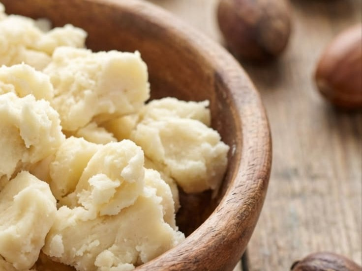

Pure · Natural · Ugandan
Pure shea butter from Kigumba.
Handmade from shea nuts picked and processed in Kigumba. Find raw shea butter, shea body soap, castor oil and avocado oil for your skin and hair.
See our productsWhere shea comes from- Handmade
- Natural oils and soap
- From Kigumba
Made from nuts we trust
Every batch starts with shea nuts gathered near Kigumba.
Four natural products
Raw shea butter, shea body soap, castor oil and avocado oil.
Gentle on skin
Rich in natural fats that soften dry skin, heels, hands and hair.
Shea and its home in Kigumba

The shea tree grows wild across the savannah of northern and mid-western Uganda, and Kigumba is one of the places where it has long shaped daily life. Families gather the fallen fruit, dry the nuts, and crush and roast them to make the butter.
The tree is slow. A shea tree can take twenty years or more before it gives a good harvest, and it is not planted like a crop. It is left standing on farmland for generations. That is why every tree lost is hard to replace.
Many years pass between a seedling and a tree that fruits well.
Most shea trees are natural. Few people have planted new ones.
The nuts bring income, especially to women who gather and process them.
The trees are being reduced
Around Kigumba, shea trees are fewer than they used to be. The main causes are charcoal burning, clearing land for farms and settlement, and cutting timber. When a tree is cut, the harvest of the whole family that depends on it goes with it.
Fewer trees means fewer nuts, a higher cost for raw material, and less shade and soil protection for the land around them.
What we do about it
We buy nuts only from people who gather fallen fruit, and we do not support cutting trees for charcoal. We want to put part of our earnings into planting new shea seedlings around Kigumba.
Shop shea butterOur products
Natural care for your skin and hair. Raw shea butter comes in four sizes: pick a size, then order on WhatsApp.
How to order
Message us on WhatsApp with the product and size you want. We will reply with price and delivery.
Order on WhatsAppAbout us
We are a small shea butter business rooted in Kigumba. We started because we saw how much value the shea tree holds for local families, and how little of it was reaching them.
We work with nut gatherers and processors, make our butter in small batches, and sell it directly to people who want skin care that is simple and honest.
No mineral oils, no fillers. Our raw shea butter is only shea.
We buy from local gatherers and pay fairly for their nuts.
We support planting and protecting shea trees in and around Kigumba.
Get in touch
Location: Ham Towers, Makerere, Kampala
Phone / WhatsApp: 0777 887 252
Email: sheabutter@gmail.com